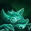
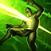

DEADLY VENOM
Twitch's basic attacks infect the target, dealing true damage each second.

AMBUSH
Twitch becomes Camouflaged for a short duration and gains Move Speed. When leaving Camouflage, Twitch gains Attack Speed for a short duration.
When an enemy champion with Deadly Venom dies, Ambush's cooldown is reset.
VENOM CASK
Twitch hurls a cask of venom that explodes in an area, slowing targets and applying deadly venom to the target.
CONTAMINATE
Twitch wreaks further havoc on poisoned enemies with a blast of his vile diseases.
SPRAY AND PRAY
Twitch unleashes the full power of his crossbow, shooting bolts over a great distance that pierce all enemies caught in their path.